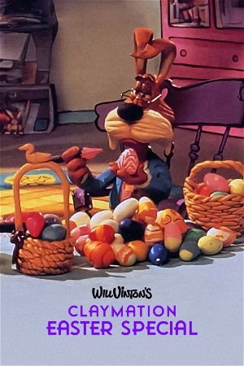

Will Vinton's Claymation Easter (1992)
Animation
| Year | 1992 |
|---|---|
| Rating | US:G / US:Rated G |
| Genre | Animation |
Claymation Easter marks the return of Wilshire Pig, with an absurd plan to kidnap the Easter Bunny just days before the holiday and launch himself as the first ever Easter Pig. As one would expect, things go terribly wrong for Wilshire in a serious of disastrous and hilarious misadventures. As with all of Will Vinton's creations, totally off-the-wall comedy is matched with eye-popping animation.